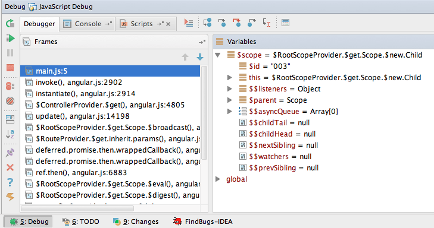

Debugging mit WebStorm und Chrome
angularjs
debugging
|
Robin Böhm
 •
|
4 Minuten
•
|
4 Minuten
Debugging? Wofür brauchen wir das denn? Wir schreiben doch alle unsere Anwendungen testgetrieben in kleinen simplen Bausteinen, sodass wir eigentlich nie in die Bredouille kommen sollten, auf diese Technik zurückgreifen zu müssen.
Jedoch kommen wir manchmal doch in Situationen, in denen wir bestimmte Fehler oder Phänome im Verhalten unserer Anwendung nicht so einfach erklären können und allein durch das Lesen des Quellcodes nicht zeitnah lösen können. In diesen Fällen bietet es sich an, den Ablauf des Programmes anzuhalten und einen genauen Blick auf den Stacktrace und die aktuelle Variablenbelegung zu werfen. Gerade in der Welt von AngularJS ist es durch die Unterstützung diverser Patterns wie z.B. HTTP-Interceptoren nicht immer sofort ersichtlich, wo der Fehler liegt. Daher können wir trotz des Sicherheitsnetzes unserer Tests auf das Debugging nicht verzichten.
Welche Werkzeuge kann ich hierzu nutzen?
Um unsere Applikation debuggen zu können, benötigen wir ein Werkzeug, das den Ablauf unserer Anwendung überwacht. In diesem können wir dann für gewöhntlich Haltepunkte definieren, an denen der Ablauf angehalten wird und wir den aktuellen Zustand analysieren können. Außerdem können wir Veränderungen des Zustands Schritt für Schritt nachvollziehen. Ein ziemlich bekanntes Werkzeug, welches diesen Vorgang sehr einfach macht, sind die Chrome Developer Tools.  Über den Tab Sources können wir hier in unserem Quellcode Haltepunkte definieren, an denen die Anwendung stoppt und wir somit den Zustand ablesen können.
Über den Tab Sources können wir hier in unserem Quellcode Haltepunkte definieren, an denen die Anwendung stoppt und wir somit den Zustand ablesen können.
Folgende Hotkeys erleichtern uns hierbei das Leben:
- F8 - Programmablauf fortführen
- F10 - Über den nächsten Funktionsaufruf springen
- F11 - In den nächsten Funktionsaufruf springen
- Shift + F11 - Aus dem aktuellen Funktionsaufruf heraus springen
Ein weiteres Werkzeug, das sich in diesem Kontext sehr gut eignet und aktuell eine verbreitete Entwicklungsumgebung im Bereich JavaScript ist, ist WebStorm. Wir können hier eine JavaScript Remote Debug Konfiguration für unser Projekt erstellen. Dazu ist lediglich eine Basis-URL anzugeben und das lokale Mapping auf unsere Projekt-Struktur zu definieren. Ein Beispiel hierfür ist in dem folgenden Screenshot dargestellt:

Zu beachten ist hierbei, dass die URL zu unserer Anwendung ohne die Raute angegeben wird, da das Mapping auf die Web-Ressourcen hierüber läuft und diese ohne Raute aufgerufen werden.
Darüber hinaus benötigen wir hierfür die Chrome-Erweiterung JetBrains IDE Support (Die Erweiterung exisitert leider nicht mehr), die sich über den Chrome Web Store installieren lässt. Ist dies getan, können wir unsere Anwendung im Debug Modus starten (Shift+F9). Es öffnet sich der Browser und führt unsere Web-Anwendung aus. Die Haltepunkte können wir nun bequem innerhalb der IDE setzen. Erreicht die Anwendung einen der definierten Haltepunkt, wird die Ausführung angehalten.

Auch hier können wir den aktuellen Stacktrace und die Variablenbelegung einsehen. Außerdem natürlich den weiteren Programmablauf steuern.
Folgende IntelliJ-Hotkeys erleichtern uns hierbei das Leben:
- F9 - Programmablauf fortführen
- F8 - Über den nächsten Funktionsaufruf springen
- F10 - In den nächsten Funktionsaufruf springen
- Shift + F8 - Aus dem aktuellen Funktionsaufruf heraus springen

Debuggen von Tests in der Ablaufumgebung Karma
Im Kontext von AngularJS nutzen wir oftmals Karma als Test Runner für unsere Tests. Auch das Yeoman-Projekt, welches aktuell quasi einen Standard-Stack für AngularJS-Projekte definiert, stellt eine Karma-Konfiguration für eine bequeme Testausführung zur Verfügung. Daher ist es wünschenswert, innerhalb von Tests auf das Debugging zurückgreifen zu können. Sogar in diesem Szenario können wir IntelliJ nutzen, um uns mithilfe des Remote Debuggers in den Applikationsablauf einzuklinken. Jedoch sind hier die Mapping-Konfigurationen nicht so offensichtlich wie beim Starten eines simplen Web-Servers mit unserer Anwendung. Die verschiedenen Dateien werden in virtuelle Unterordner gemappt. Unsere Anwendungsdateien befindet sich hierbei in dem Pfad base. In dem folgenden Bild ist eine lauffähige Konfiguration hierfür dargestellt:

Somit ist auch das Debuggen von Tests im JavaScript-Umfeld kein großes Problem.
Debuggen von Grunt Build Jobs
Ein weiteres Werkzeug, das uns bei der Automatisierung von wiederkehrenden Aufgaben hilft, ist der Task Runner Grunt. Wenn hier etwas schief läuft oder man sogar ein eigenes Plugin entwickelt, ist es ebenfalls manchmal sinnvoll, auf die Hilfe eines Debuggers zurückgreifen zu können. Da in diesem Szenario nicht der Browser die Ablaufumgebung stellt, sondern die Ausführung in einem Node.js-Prozess geschieht, gestaltet sich die Konfiguration hierbei ein wenig anders.
Wir erstellen in diesem Fall eine Debug-Konfiguration in Node.js und geben dort unser Projekt-Verzeichnis als Working Directory an. Außerdem müssen wir den Pfad zu dem globalen Grunt-CLI Modul als Node App JS File angeben. Optional können wir noch Parameter an den Grunt-Prozess übergeben.

Ist dies erledigt, können wir wie gewohnt in unseren Grunt-Plugins Haltepunkte setzen, an denen der Ablauf gestoppt werden soll.
Fazit
Es gibt genug Werkzeuge im Bereich von JavaScript, die uns die Analyse in Fehlersituationen vereinfachen. Viele Entwickler wissen gar nicht, wie einfach es ist, JavaScript-Anwendungen zu debuggen und versuchen sich mit console.log() oder ähnlichen Konstrukten zu helfen. Ich hoffe, dass mit diesen kleinen Tipps die eine oder andere Fehlersuche beschleunigt wird.


Robin Böhm
Robin beschäftigt sich seit 2012 intensiv mit der Erstellung client-seitiger Web-Applikationen. 2014 hat er das erste deutschsprachige Buch zum Thema AngularJS geschrieben und ist Mitgründer der Platform Angular.DE. Mit seinem Schulungs-Team hat er bereits über 1200 Unternehmen den erfolgreichen Start mit Angular ermöglicht.